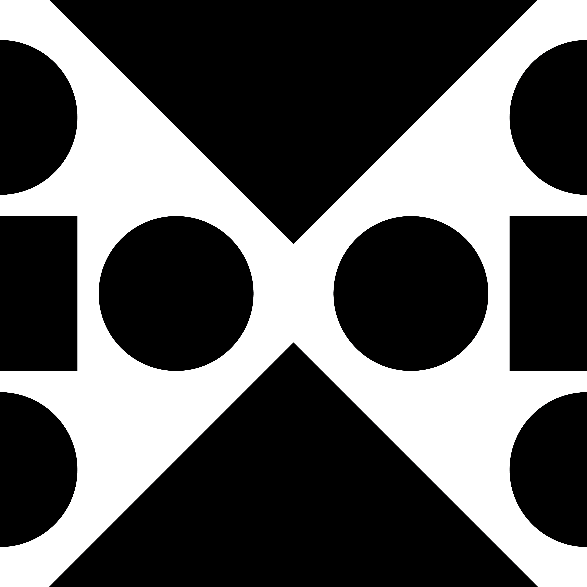
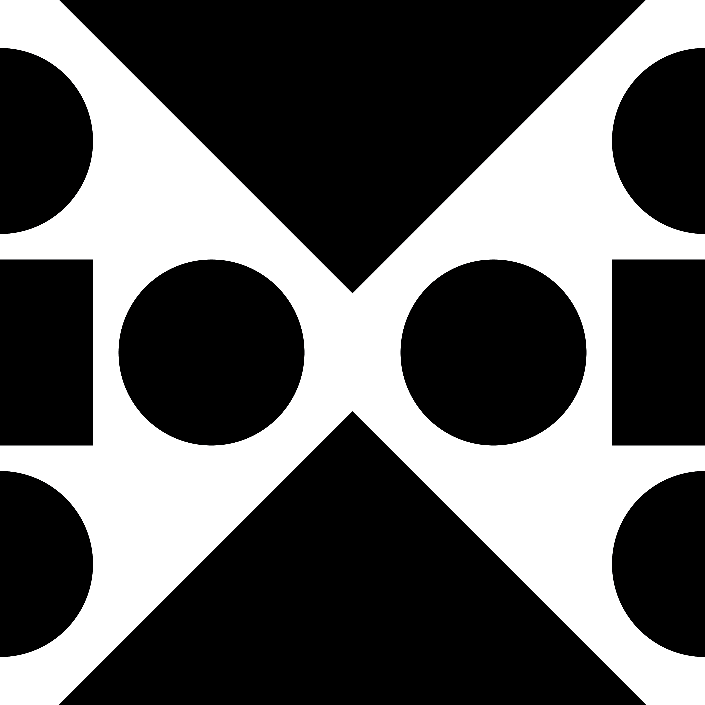
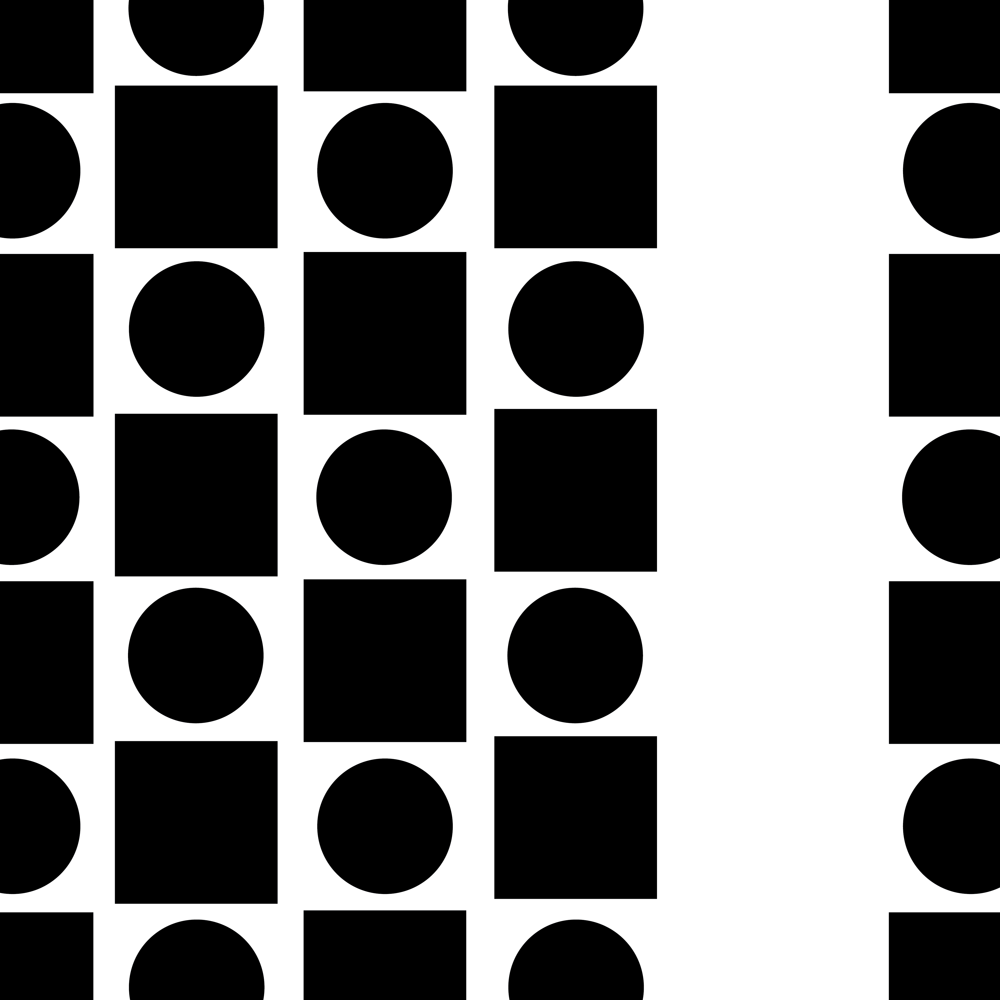
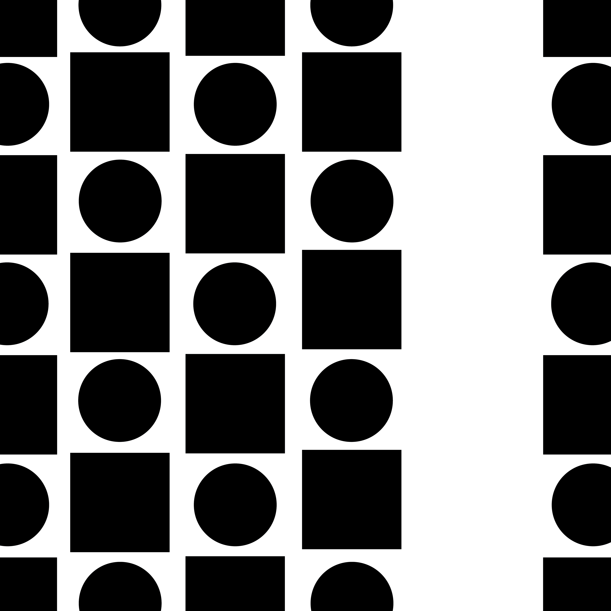

Gestalt Principles
Project Description
I used Adobe Illustrator to create individual representations of the six Gestalt Principles: figure/ground, symmetry, similarity, continuation,
closure, and proximity (respectively). Each composition I made consists of simple shapes such as triangles, circles, and squares. Throughout my creative process,
I thought a lot about the arrangement of the shapes and how I could best portray each principle. I also reflected on how I could use positive and
negative space to enhance each composition. Although this project was rather simple conceptually, it helped me practice using basic design principles
which could help me enhance my work.
 


 
